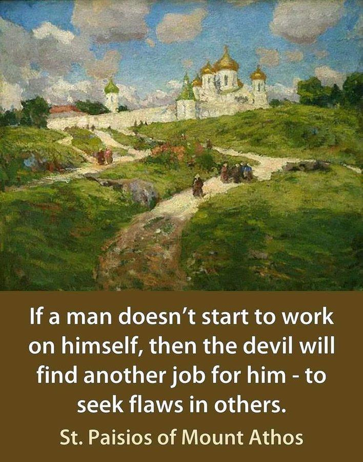
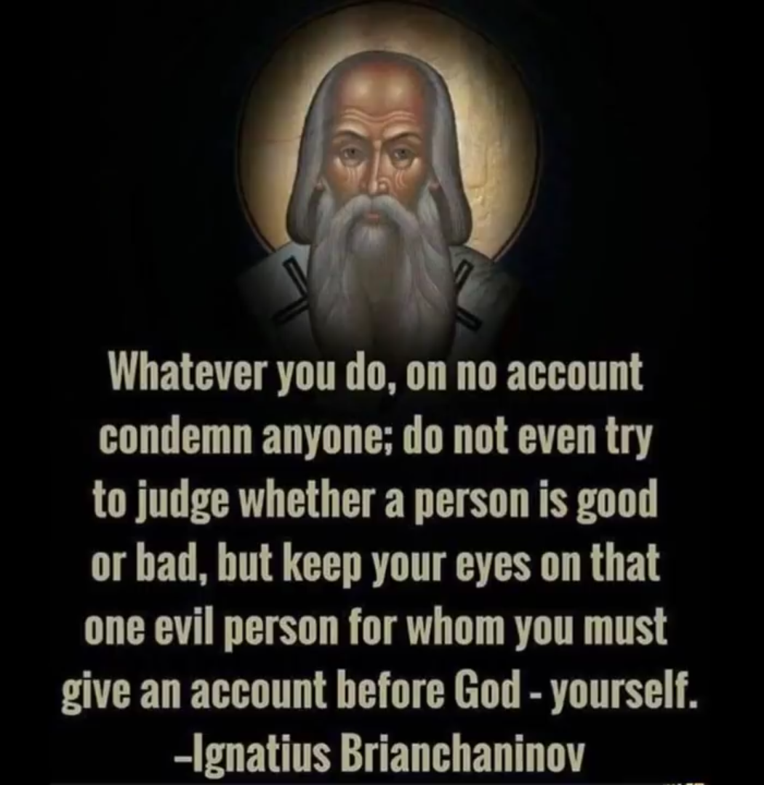
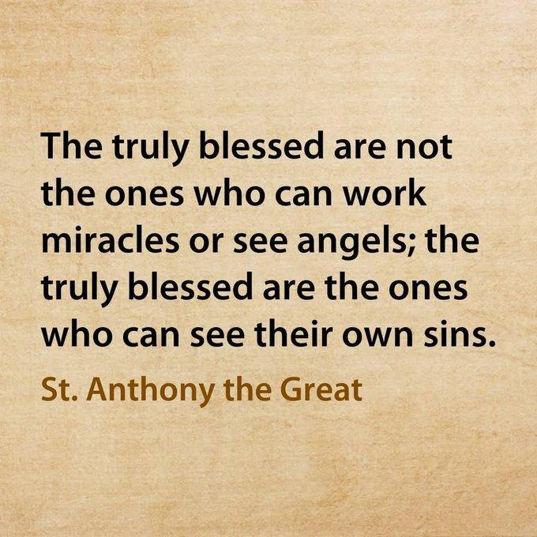
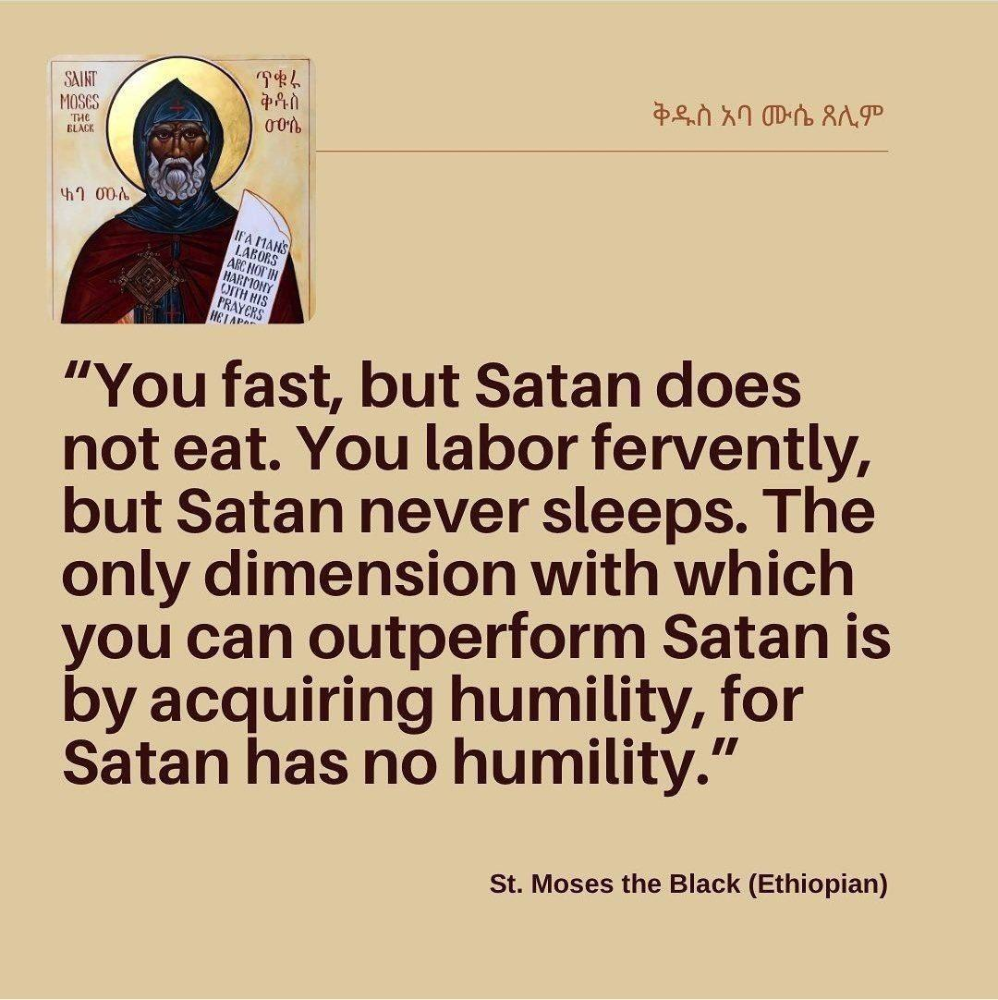

Even if you aren't Christian, whether you are of a different belief, or lack a belief in theology, I think that you could appreciate my understanding of Pride and how it objectively affects everyone.
First, we need to talk about anger (Wrath.) We are living in a time fueled by anger. Many are angry over the horrible state of the world, and this leads to people taking sides, and developing opinions.
And these opinions lead to politics, which has effectively became the new religion. It feeds off of ones Pride by convincing them that they're right about everything, and they get angry (Wrathful) at others for their different (even wrong but well intended) opinions.
This leads to hatred toward other people for their either
And if pride or the Ego leads to anger, then what else?
While yes, it is situational, every vice can absoloutely be inspired from ones ego.

Do you see what we just did? Even if one does not believe in the "spiritual" evil of these sins and vices, it is rather apparent that a lot of these negative personality traits are swayed by ones ego!
I honestly somewhat view the old Saints, the Ascetics, and philosophers as "psychologists."
Nowadays, we refer to Pride as either narcisscism or egotism. People in the days of old saw Pride as a spirtual illness rather than a mental one, and had Christ as the treatment.
I honestly believe that's just such a beautiful thing.

If you are devout and pious, and you want to do amazing things to honor God, that's great! Throughout history, many people devoted their lives to hardship and austere work to honor God.
And sometimes, people would start to think that they're better than people who don't devout themselves. The moment that happens, you would've been better off if you didn't fast yourself, or live out in the woods, or whatever great deed you wanted to achieve.
And I sadly have seen people of all religions think that they're better than people who don't follow their beliefs. I've even seen people from different denominations of the same religion bark at each other.

If Pride is what causes one to fall from grace, leads to them judging others, even HARMING others, then who can cure such a powerful ailment?
I say that Christ, His words, His wisdom, He Himself has what it takes.
And even if you don't believe in the divinity of Jesus, I do believe that Stoics, Pagans, and even atheists can learn from and appreciate His teachings and apply it to their lives, and it may even lead them toward Christ after all.

Return to main page